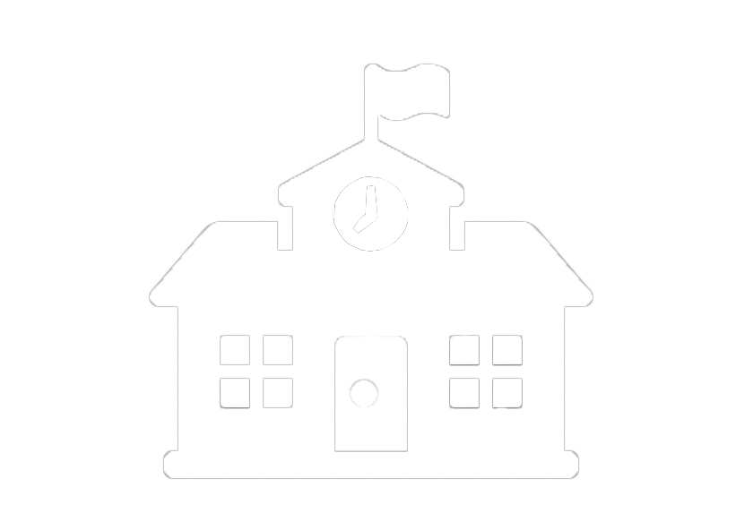

High School
Back in my home country, I used to study from first to sixth grade, which was equivalent to year 9 in the UK, I remember that the lessons were easy for me, I was understanding quickly and I was having good grades.

I used to study English before I moved to the UK, I wanted to speak the language better so I can have communication with people, I attended these lessons every Tuesday, Thursday and Sunday for an hour and forty minutes for two years. This gave me a good start with my English when I moved up in my new home in the UK

Secondary School
My first year in the UK I applied for a secondary school, I started year 10 with very poor communication, but afterwards I learned how to speak English better and gain more communication skills.
College
Nearly finished second year in West College of Angliq with computing course, the college gave me knowledge that I wouldn't get anywhere else, I gained knowledge about education, work and even life.